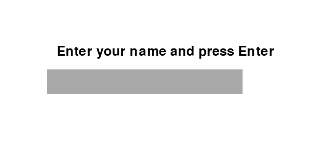
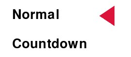
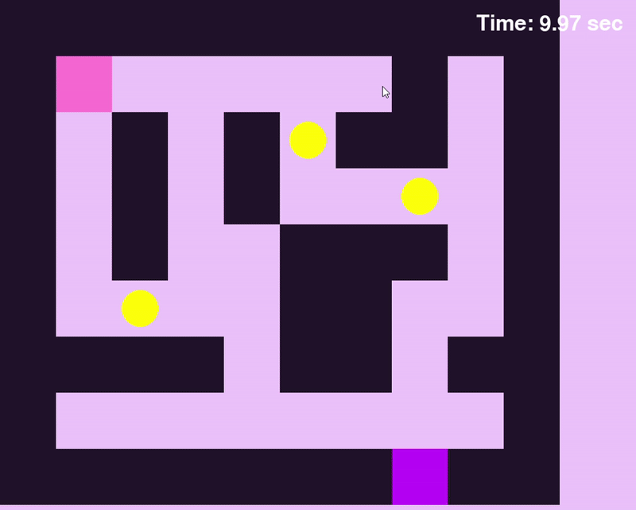

Při vstupu do hry, hra Vás požádá uvést svůj nickname.
Pak mátě si zvolit gamemode šípkami nahoru a dolu.
Normal je defaultní mode, ve kterém musíte najít správnou cestu a sbírat hvězdičky.
Po ukončení můžete buď pokračovat ne stejné mapě nebo přeskočit na novou.
V countdowmu musíte se urychlit, protože po spuštění stopek máte omezený čas na ukončení levelu.
Mátě na výběr 3 složitosti: